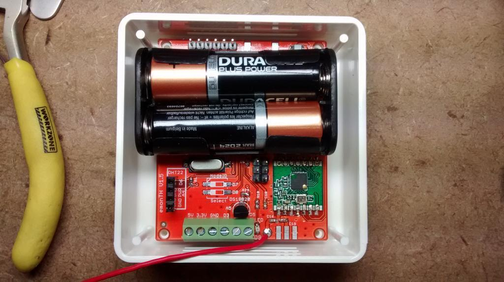

.. I'm thinking about getting some emonTH's .. but they are are equipped with the rfm12b radios ..
Can the current emonTH version talk to the rfm69 based raspberry pi base-stations ?
Will there be a rfm69 version of the emonTH in the near future ?
Archived Forum |
|
emonTH - is there going to be a rfm69 version ?Submitted by Guest on Thu, 19/02/2015 - 19:35.. I'm thinking about getting some emonTH's .. but they are are equipped with the rfm12b radios .. Can the current emonTH version talk to the rfm69 based raspberry pi base-stations ? Will there be a rfm69 version of the emonTH in the near future ? » |
Re: emonTH - is there going to be a rfm69 version ?
1. Yes,
2. Possibly, but see what Paul (pb66) wrote here: http://openenergymonitor.org/emon/node/10055#comment-27923
Re: emonTH - is there going to be a rfm69 version ?
In development :-)
.Probably about 3-4 months away from being in the shop based on current stock and manufacturing schedule. The RFu328 currently on the emonTH does not allow use of RFM69CW. We have redesigned the mcu / rf portion of the emonTH for the update
We've also added dip switch for easy node ID selection.

Re: emonTH - is there going to be a rfm69 version ?
Hi,
Why not break out all available inputs/outputs on the PCB ?
Eric
Re: emonTH - is there going to be a rfm69 version ?
Can I stick in a vote for offering a Sensiron SHT21 humidity+temp sensor option at the same time? These are now only 3 quid each from Farnell (order code 1855468) , and have good long-term accuracy and reliability in my experience.
I'll be happy to do the software side of things (in fact I'm planning to do that in the next week or so anyway, adding one into a Leonardo + Emon shield setup) - I think OpenTRV has code to read them already...
If it's too late to stick it on the main board, then a little break-out PCB with the same pin-out as the current humidity sensors would do the trick (and give better accuracy too by keeping it away from other components).
You'd probably pick up quite a few sales in the M&E / post-occupancy monitoring / Passivhaus etc. communities if you offered that (and I'd be happy to spread the word!).
Tim.
Re: emonTH - is there going to be a rfm69 version ?
BTW, I now have the SHT21 working on an emontxshield with an Arduino Uno for humidity and temperature recording.
I bought an SHT21 on a board completely with 5v/3.3v regulator and i2c level shifters for £4.20 on a popular online auction site (since my Arduino operates at 5v, but the SHT21 needs a supply voltage between 2.1v and 3.6v).
The cheaper (but compatible) HTU21D (made by a different manufacturer) is available on the same level shifter board for ~£2 (including shipping halfway around the world - makes me wonder how anyone involved makes a living - the bare HTU21D is £1.15 from Farnell if you buy 5000+ of them).
I stuck the SHT21 breakout board on the end of a length of cat5e, and implemented checking the CRC output of the SHT21 as a precaution.
Since the emontxshield uses the two digital inputs which are connected to the Arduino Uno's hardware i2c implementation, I used a software i2c library instead (which allows you to use any pair of digital i/o for the i2c SDA / SCL connections).
I subsequently found an Arduino library for the SHT21 / SHT25 here: https://github.com/misenso/SHT2x-Arduino-Library - but it doesn't do CRC or soft I2C (only uses Wire).
... so I plan to adapt my code to support the same API before I release it, but if anyone wants it before hand, please bug me and I'll publish it.
Tim.
Re: emonTH - is there going to be a rfm69 version ?
Made this lib some time ago: https://github.com/chaveiro/SHT2x-Arduino-Library
Re: emonTH - is there going to be a rfm69 version ?
I wish you would change the PCB so an RFM69HW can be fitted
Re: emonTH - is there going to be a rfm69 version ?
@kirkholt,
Would that be compatible with reasonable battery life?
Re: emonTH - is there going to be a rfm69 version ?
@emjay,
I guess the battery life would be a bit shorter, but the range will be better :)
Re: emonTH - is there going to be a rfm69 version ?
@kirkholt,
Doubling the range requires roughly four times the transmitter effective radiating power - that needs doubling the transmit current into the antenna load (W = I2*R). This can only come from the stored charge in the battery, so effectively halves the battery life.
Since there are second order effects (e.g. the transmitter efficiency of converting d.c. current into R.F. energy tends to fall at the highest powers since the switching elements have finite resistance), the current consumption increase may well be higher than 2x .
Viewing this on the more usual log scale, doubling is 'only' 3dB. The key parameter for successful reception is the received Signal to Noise ratio (SNR). By paying close attention to antenna matching, receiver tuning and the like, getting a 3dB improvement here is not difficult - and it comes 'for free' in terms of transmitter energy consumption.
Once the SNR is more than 20dB above the noise floor, for the packet sizes here, there is no advantage in improving it further. Indeed, the Tx power can be backed off to around this threshold for better battery life. Of course there are practical constraints (an outdoor sensor and it starts to rain, an indoor sensor with people/pets crossing the transmit path) where some excess signal margin is an advantage if the power levels are not adjusted dynamically.
Finding the 'sweet spot' for all usage cases is not easy - IMHO the lower power/consumption RFM69 is usually a better fit for 'lean' remote nodes.